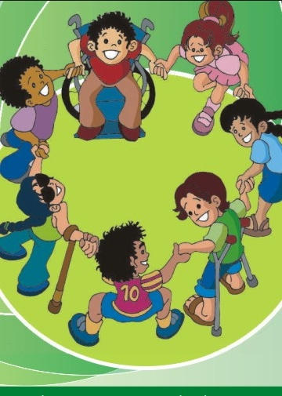

Objetivos
Objetivo: Reconocer correctamente fracciones a partir de objetos.
Objetivo: Reconocer correctamente fracciones a partir de objetos.
DCD a desarrollar: M.3.1.33. Leer y escribir fracciones a partir de un objeto, un conjunto de objetos fraccionables o una unidad de medida.
Tiempo: 40 minutos aproximadamente
Materiales:
Descripción de la actividad:
En esta actividad, los estudiantes, juntamente con el docente, deberán construir una pizza haciendo uso de cartón reciclado. En primer lugar, tiene que cortar el cartón en forma de un círculo del tamaño que sea conveniente. En segundo lugar, tiene que dividir en círculo en partes iguales; luego, cada estudiante tendrá que poner en práctica su creatividad y decorar su pizza como ellos quieran. Finalmente, se pondrá en práctica el juego en el que el docente escribirá en la pizarra la fracción y los niños deberán construir con sus pizzas. También se puede formar parejas en donde el primer estudiante representará una fracción en su pizza y el segundo estudiante deberá leer, o en su defecto, escribir la fracción representada en su cuaderno. Posteriormente, se invierten los roles, esta actividad se puede realizar las veces que el docente considere necesarias.

-Se puede cambiar el cartón por otros materiales.
-Utilizar imágenes para explicar los pasos para crear la pizza.
-Se puede utilizar fracciones más simples.
-Se puede realizar la actividad en grupos pequeños para dar atención especializada.

Obra publicada con Licencia Creative Commons Reconocimiento No comercial Compartir igual 3.0